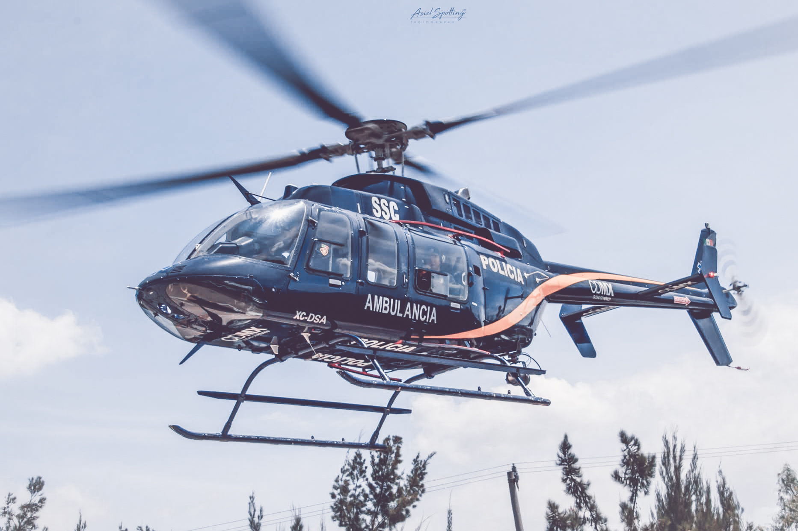
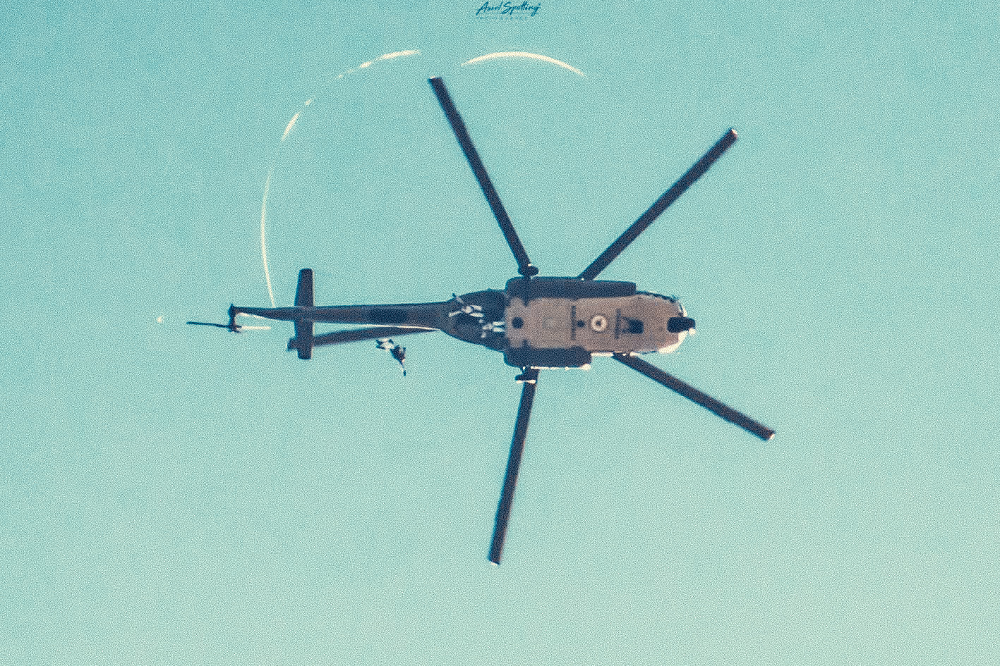
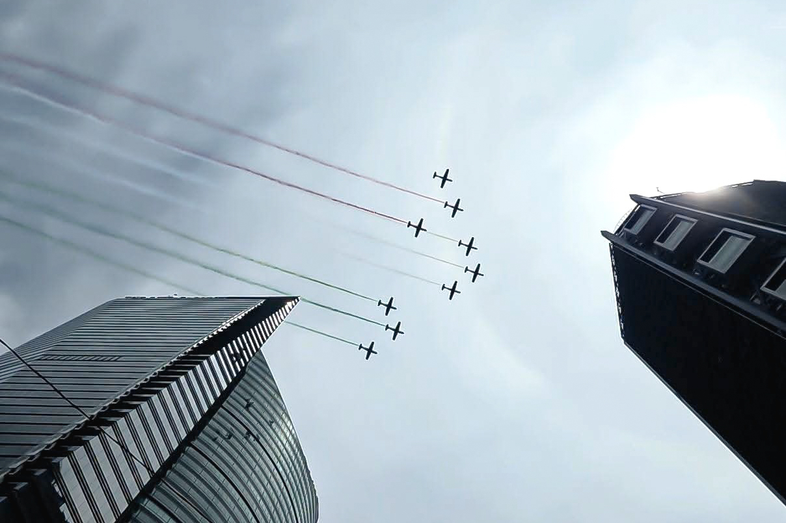
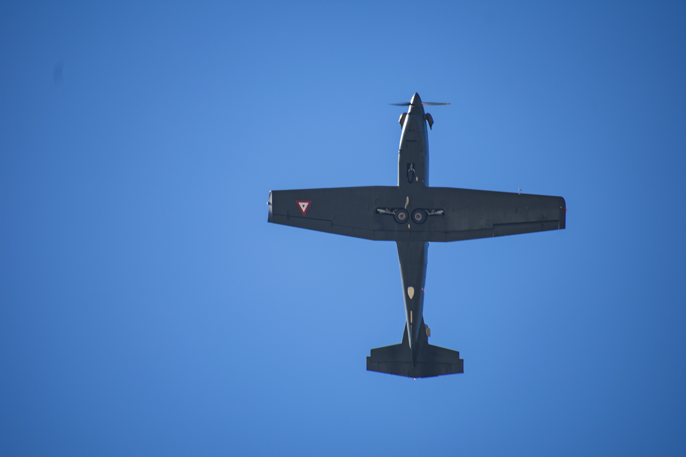
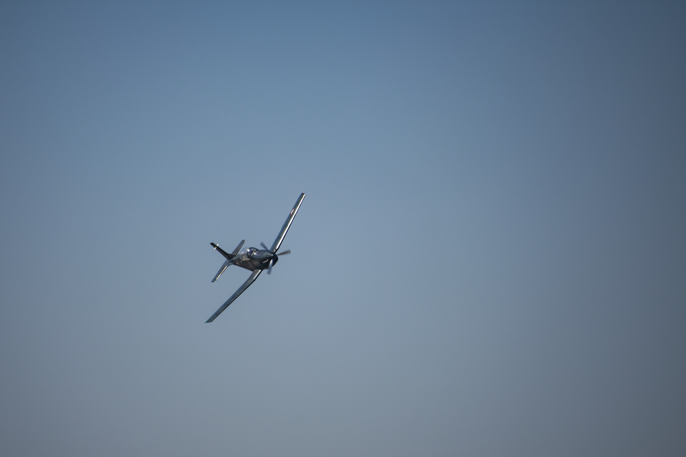
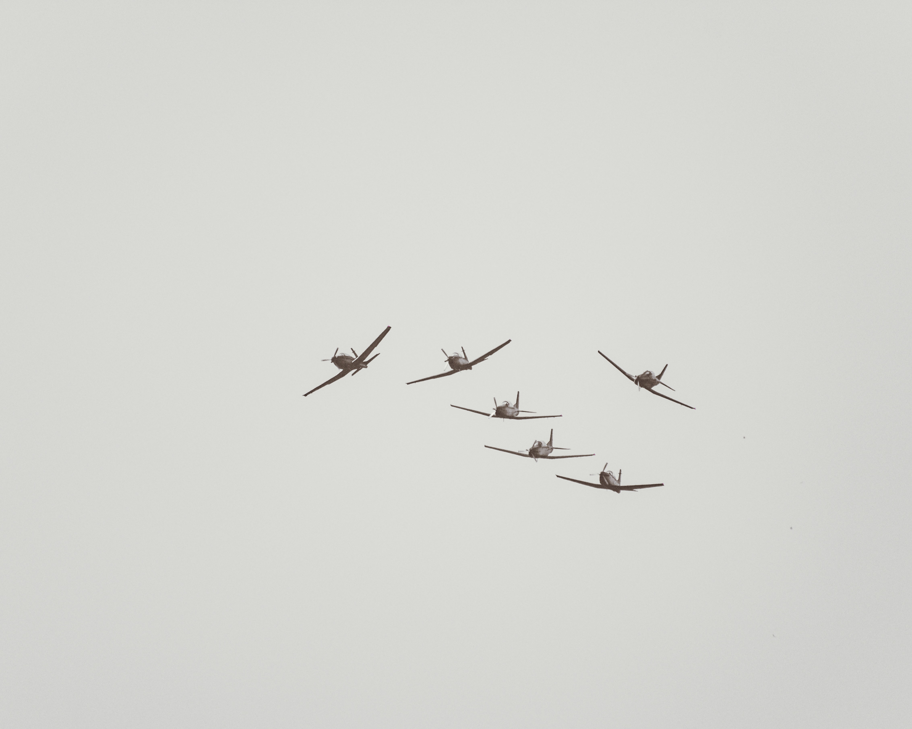
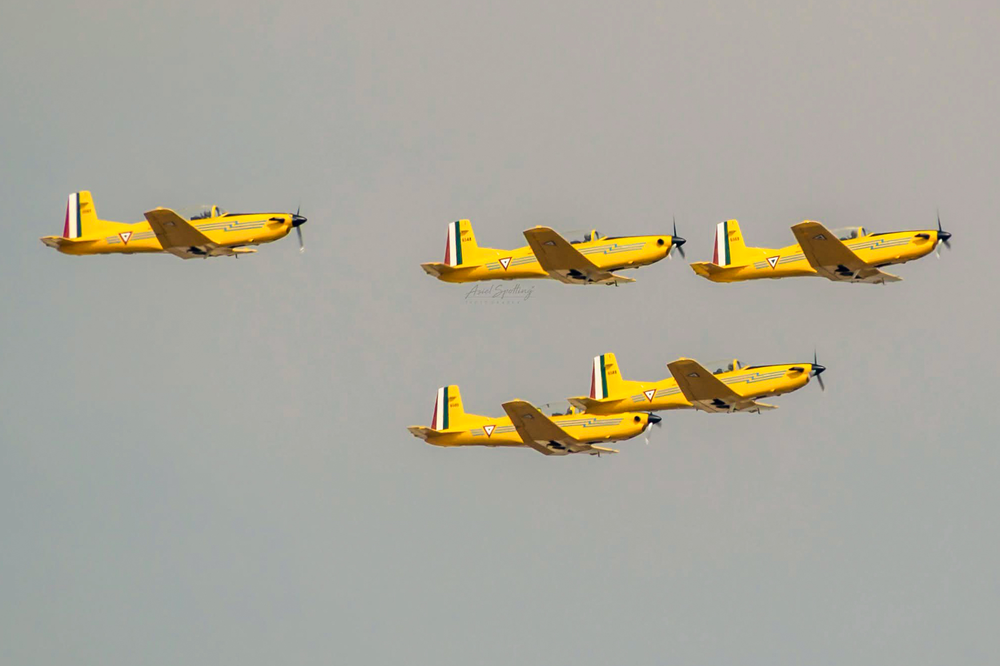
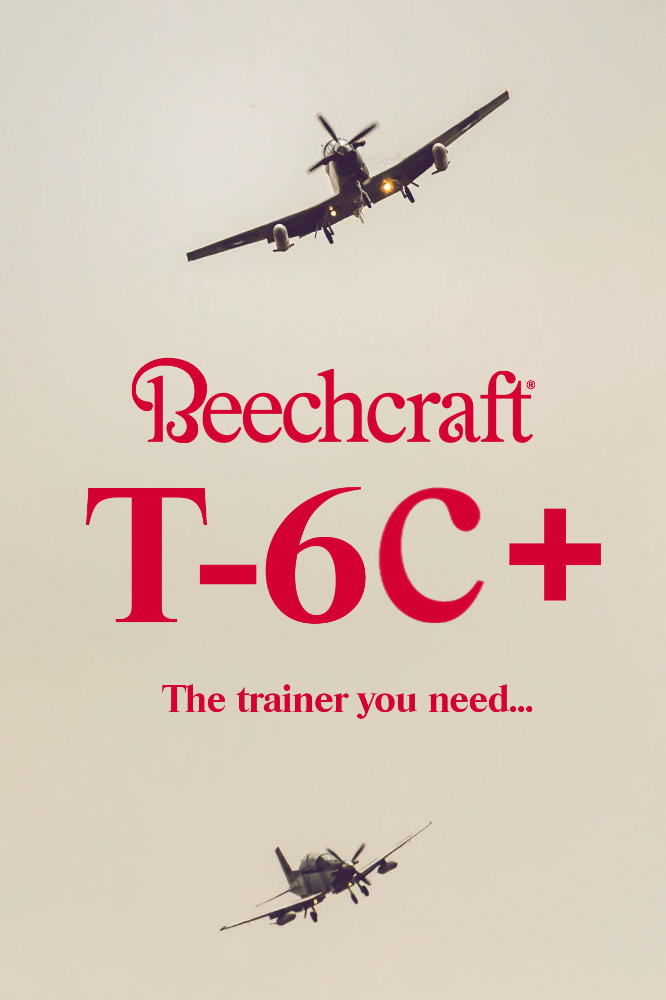
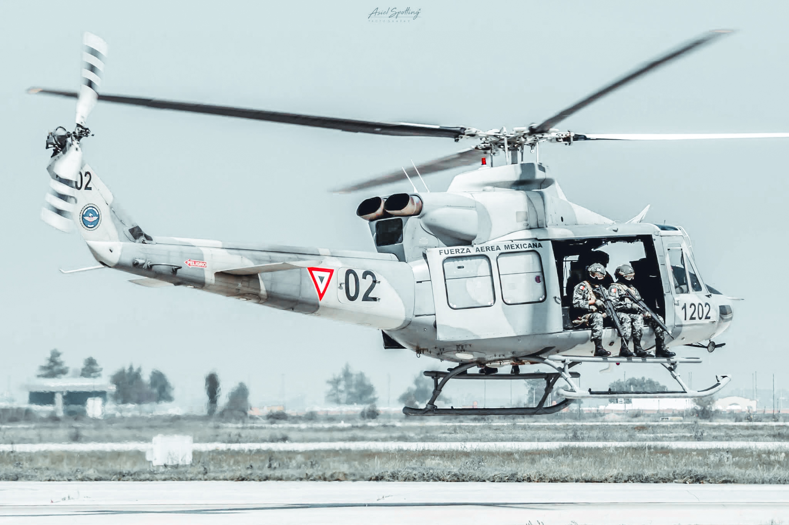

01 · Prevuelo
Inspección, preparación y detalles antes de que la aeronave despegue.
 03
Escribe aquí la descripción de esta foto
03
Escribe aquí la descripción de esta foto
02 · Despegue
El momento en que la aeronave deja tierra: potencia, ángulo, movimiento.
 07
Helicóptero UH-60M de la Fuerza Aérea Mexicana despegando hacía una misión
07
Helicóptero UH-60M de la Fuerza Aérea Mexicana despegando hacía una misión

08 Escribe aquí la descripción de esta foto03 · Crucero
Vuelo estable: cielo, nubes, formación, paisaje visto desde el aire.

11 Escribe aquí la descripción de esta foto
12 Escribe aquí la descripción de esta foto04 · Maniobras
Acrobacia, viraje, velocidad: el punto más dinámico de la bitácora.

13 Escribe aquí la descripción de esta foto
14 Escribe aquí la descripción de esta foto
15 Escribe aquí la descripción de esta foto
16 Escribe aquí la descripción de esta foto05 · Aterrizaje
El cierre del vuelo: descenso, pista, llegada.

17 Escribe aquí la descripción de esta foto
20 Escribe aquí la descripción de esta fotoBitácora del vuelo — mi experiencia con la herramienta
Editor utilizado: escribe aquí qué software usaste para editar las 20 fotos (por ejemplo GIMP, Photopea, Photoshop, Canva, Snapseed...).
Qué edité en cada foto: describe brevemente los ajustes que aplicaste (recorte, exposición, contraste, filtros, retoque de color, eliminación de elementos, etc.).
Cómo fue la experiencia: cuenta qué se te facilitó, qué se te complicó y qué aprendiste sobre la edición de imágenes usando esta herramienta.
Enlace de esta galería para el foro: pega aquí el enlace de GitHub Pages una vez publicado (https://tu-usuario.github.io/tu-repositorio/).